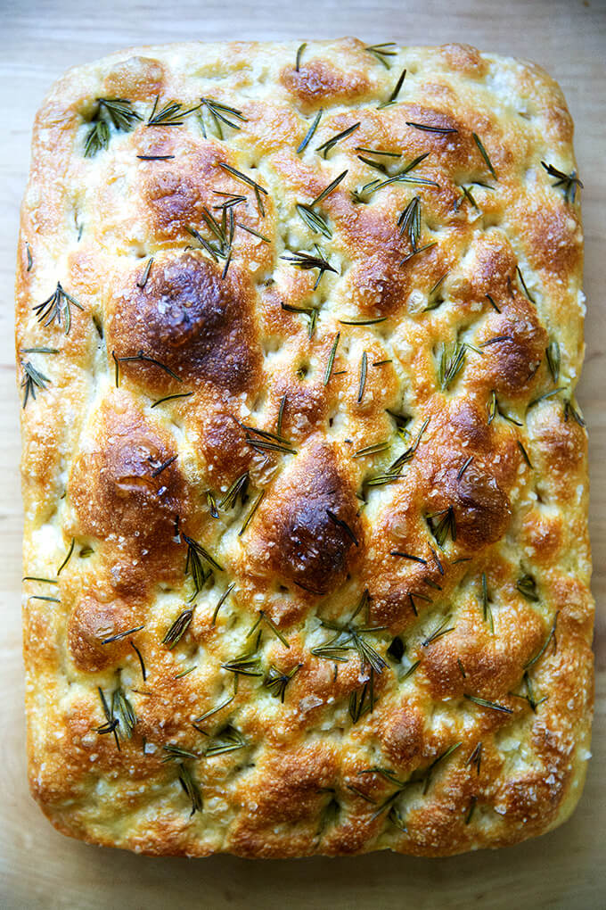

Focaccia

Description
One of the most famous traditional Italian breads, Focaccia is my favourite appetizer to have with olive oil and a splash of balsamic vinegar.
Ingredients
- 1 teaspoon instant yeast
- 450g lukewarm water
- 1 teaspoon honey
- 2 teaspoons salt
- 2/3 cup olive oil
- 500g all-purpose or bread flour
Steps
- In a large mixing bowl, add the instant yeast, water, honey, salt, and olive oil together, in that order. For olive oil, only 1 tablespoon will be used in this step. Give it a good stir to ensure all your ingredients are incorporated.
- Add your flour and mix until all the dry flour patches are gone.
- Cover the bowl with plastic wrap making sure that there is no room for air to escape the bowl, and let it rest at room temperature for 10 minutes. Your dough should look very wet.
- Wet your hands and perform a “stretch and fold” where you grab a handful of dough from the 12 o’clock position and pull it to the 6 o’clock position and repeat from the 3 o'clock position to the 9 o'clock position. Repeat this motion twice. This helps create tension on the dough. Let this rest at room temperature for another 10 minutes.
- Repeat the "stretch and fold" once more then roll the dough over so that the folds are on the bottom of the bowl and the top is smooth. This prevents those air pockets from escaping.
- Drizzle the top of the dough with 1 tbsp of olive oil and cover with plastic wrap.
- Place the bowl in your fridge for at least 12 hours and up to 24 hours for best results.
- Take your dough out of the fridge and by now you will notice that your dough has at least doubled in size.
- Drizzle ¼ cup of olive oil onto your 9” x 13” baking sheet and plop your dough onto it. If you are layering with parchment paper, then drizzle 2 tbsp of olive oil in-between the parchment paper and your baking sheet then add the ¼ cup of olive oil on top of the parchment paper. I like to do this to make sure the parchment paper does not move around.
- Gently drop your dough onto the parchment paper.
- Grab the sides of your dough and fold them over each other, kind of like folding a piece of paper into thirds and then gently flip the dough over so that the folds are at the bottom of the baking sheet. The idea is to create surface tension and make sure the dough is smooth on top.
- Cover the dough with a larger tray, making sure that no air can escape and leave to to proof at room temperature for 1.5 hours. Only use plastic wrap if you are using a deep over pan where the plastic wrap will not touch the dough.
- Now for the fun part – using your fingers, create the dimpling. You just want to press your fingers into the dough evenly and gently making sure not to pop any air bubbles.
- Add your toppings into the dimples. Olives, rosemary and/or salt is a good place to start.
- Drizzle dough with 1-2 more tbsp of olive oil and bake at 430F for 18-20 minutes or until fully cooked and golden brown. Optionally brush with more olive oil at the end.